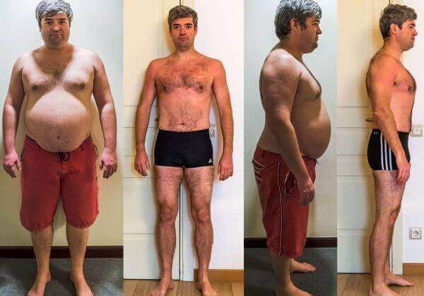
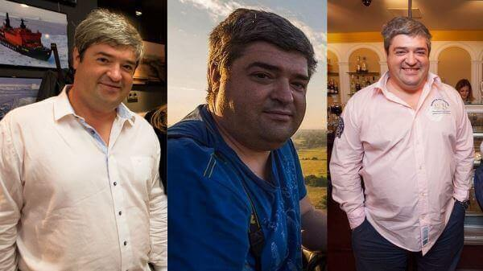
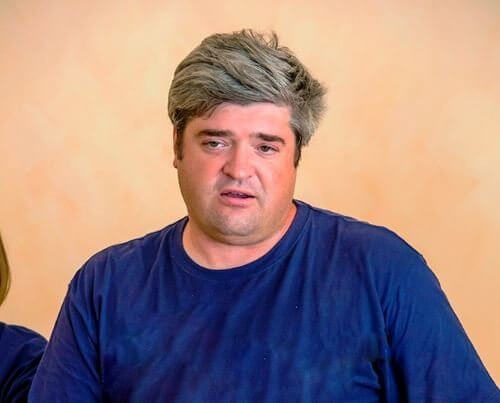
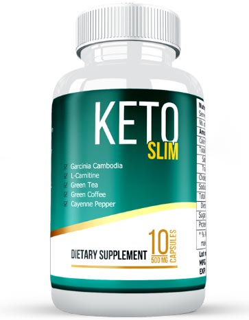
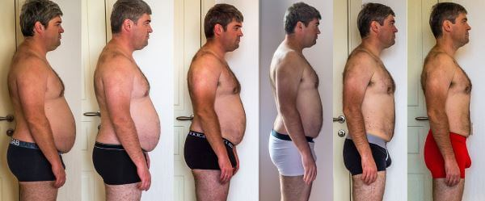
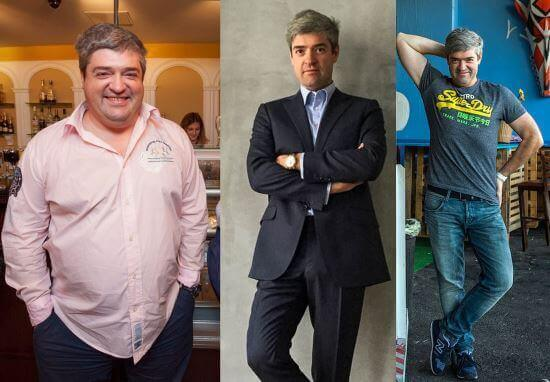
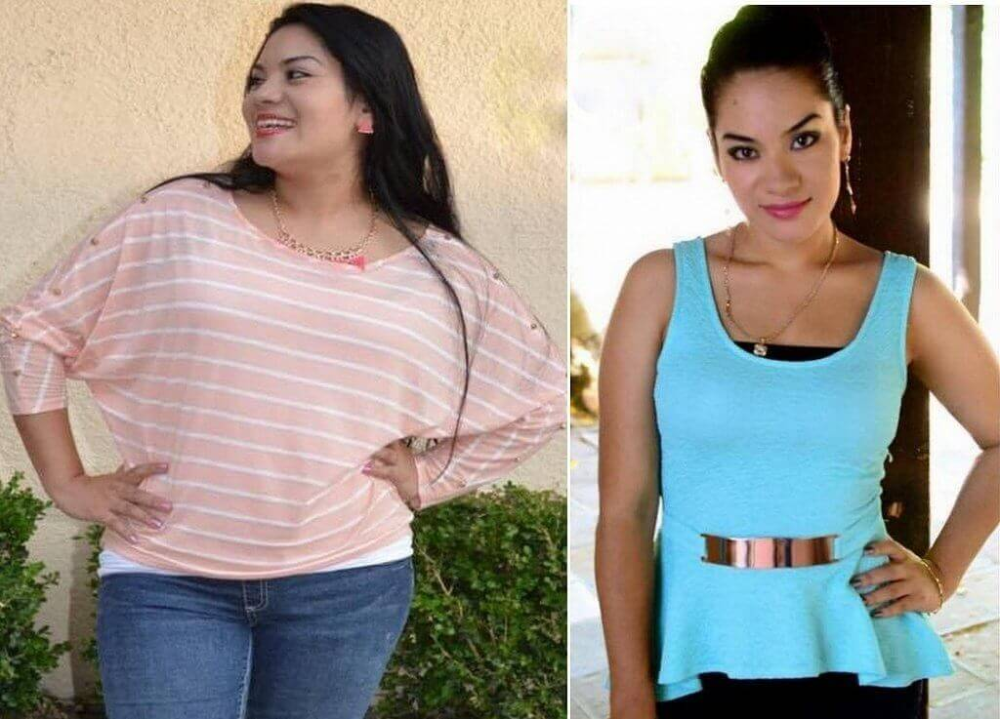
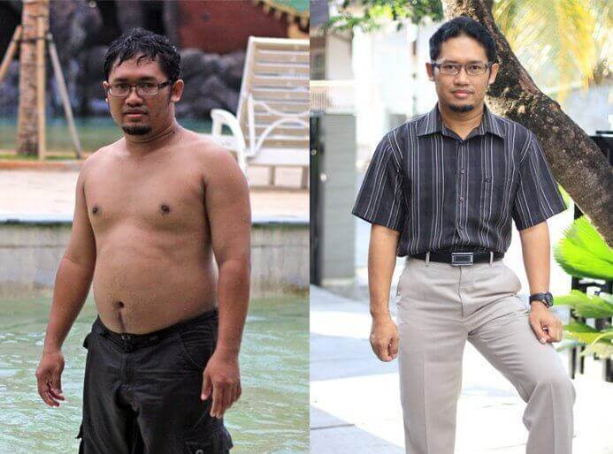
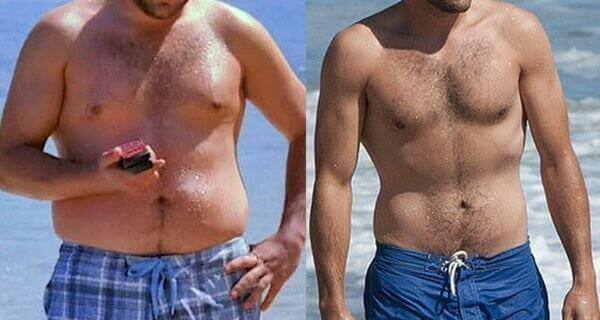
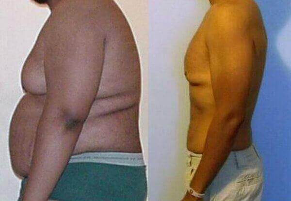

- Amado
- 115 mga komento
- 227 710 ang nakapanood
- 1.03.2020
Paano makapagbawas ng 45 na kilo kahit hindi wasto ang pagkain at hindi nag-eehersisyo
Makakatulong ang paraan na ito sa iyo na makabawas ng 15 na kilo bawat linggo ng MABILIS at LIGTAS
Kamusta kayong lahat! Kasama ninyo si Amado gaya ng dati. Napamahalaan ko ang pagbabawas ng timbang gamit ang isang halos hindi alam na paraan at ang kanyang posibilidad na mabubura ang paskil na ito sa lalong madaling panahon. Itong bago na paraan ay totoong pambihirang tagumpay sa nutrisyon. Maraming diyetisyan ang desperadong subukang itago ang paraan na ito bilang ang pagbubunyag nito ay medyo hindi kapaki-pakinabang sa kanila. Maraming oras at pera ang aking ginugol sa pagpapahirap ng aking sarili sa mga at pagsasanay kasama ng mga personal na tagapagsanay sa kaangkupan. Subalit walang gumana sa akin. Nakatagpo ako ng ibang solusyon na nagyari sa aking napakasimple at mapupuntahan na mahirap paniwalaan. Gusto ko naman ngayon ibahagi sa lahat ng may problema sa sobrang timbang at kalusugan.
Heto ang aking kwento;
Palago kong gusto ang matigas na pagkain, kaya malaki na ako simula pa ng aking pagkabata. Paborito ko noon ang tsitsirya, nakaupo habang nanonood ng TV pagkagaling sa trabaho. Hindi gusto ng asawa ko ang ganun ngunit hindi naman siya nagprotesta. Subalit nang mangyari na 25 bumilis ang aking paglaki, lalo na ang aking tiyan. Hindi ko namalayan kung paano ako lumago sa hindi kapani-paniwalang sukat. Para akong isang malaki at matabang baboy. Noong 33 taong gulang ako ang aking timbang ay 125 na kilo kung saan 46 na kilo mahigit ay normal sa aking taas.
Sa kabilang dako, nagkaroon ako ng seryosong isyu sa kalusugan. Naranasan ko ang malubhang sakit sa aking tagiliran, kung saan matatagpuan ang pancreas. Nagsimula akong makaranas ng walang kabuluhan, namamawis ng sobra, at pag-ikli ng aking hininga. Ngunit ang pinakamasaklap para sa akin ay ang kawalan ng lakas. Sa totoo lang, ang laki ng aking tiyan ang kumanlong sa aking pagkalalaki sa matagal na panahon. Ngunit nang huminto nang magtrabaho, aking napagtanto na kalabisan na pala. Inapektuhan ng kawalan ng lakas ang aking buhay pamilya. Nag-umpisa na rin lumaban ang aking asawa ng medyo madalas. Ang hindi pagka-kontento ng aking asawa aymalaking dagok sa aking tiwala sa sarili. Kinamuhian ko ang aking sarili at naramdaman ang pagiging talunan.
Dumaan ako sa medikal na pagsusuri sa ospital at talagang nakakalungkot ang resulta. Nasa malubhang kalagayan ang aking katawan sa dyabetis. Maraming taon na pagkain ng tsitserya ang pumatay sa aking katawan, lalo na ang pancreas.
Lumipat ako sa mahigpit na diyeta. Kapag kumain ka ng lahat ng gusto mo sa buong buhay mo, ang diyeta ay magiging totoong sikolohikang paghihirap. Bawat linggo na tumatayo ako sa timbangan na nagbabakasakaling hindi nasasayang ang aking paghihirap. Subalit laging ipinapakita ng mga timbangan ang 125.9 kg. Pagkalipas ng 3 buwan, aking napagpasyahan na mag-bolster sa diyeta ng pag-eehersisyo at nag-umpisang magpunta sa dyim. Isang lokal na tagapagsanay ang nagsabi na mababawasan ang aking timbang sa loob ng anim na buwan kung saan ang aking malaking timbang ang gumawa ng pinakamatinding ehersisyo na mapanganib para sa akin. Samakatuwid, mga simpleng ehersisyo lang ang aking ginagawa gaya ng paglalakad sa threadmill, sumasakay sa pang-ehersiyong bisikleta, gumawa ng pag-aquat at tumatalon. Ngunit kahit simpleng gawain lang na 10 squat ay mahirap para sa akin. Hinihingal ako at nakakaramdam ng hilo. Ngumingiti ang mga ibang tao sa akin sa dyim habang nakatingin sa akin. Sang-ayon ako, masyadong nakakatawa ito kapag ang isang malaking idiot na taba ay humihingal at nagpapawis sa ehersisyo na kung saan madaling gawin ng sinumang retirado.
Ito ang pinakamirap na sandali ng aking buhay. Palagi akong nagugutom. Maging sa aking panaginip nakakakita ako ng pagkain. Naging napaka-nerbiyos at inis ako. Mas maganda marahil ang pakiramdam ko kung may suporta ako mula sa aking asawa ngunit kinasusuklaman niya ako. Inaaway ako palagi at iniiinsulto ako at nakakapagsalita ng mga walang kabuluhang bagay, gaya ng pagtawag sa akin ng "Matabang scumbag", " Talunan" at sinasabing "Hindi mo ako kailanman napasaya". Isa itong delubyo. Hindi naniniwala sa akin ang sarili kong asawa. Hindi nagtagal iniwan ako para sa ibang lalaki at nagpila ng diborsyo.
Pagkatapos nito, sinubukan kong manatili sa aking diyeta at pag-eehersisyo sa dyim para sa iba pang buwan. Ngunit nang muling ipakita ng ng aking timbangan ang pangit na 125 na kilo sinira ko ang diyeta. Bumalik ako sa pagkain ng mabilis na pagkain sabay ng pag-inom ng mga espitu.
Ito ang panahon na ayaw ko nang mabuhay. Marahil nakitil ko na ang aking sariling buhay kung hindi dahil sa kaibigan kong si Juan. Iniligtas niya ako. Lumipat ako sa kanyang lugar para mapagtagumpayan ang depresyon. Sinabi ko kay Juan ang lahat na itinatago ko sa sa loob. Nahiya ako na sumigaw at umuungot gaya ng isang batang babae. Ngunit hindi kapani-paniwalang mahirap ang pamumuhay sa lahat ng ito sa loob ko. Lubos kaming nagkakasundo ni Juan. Nakinig siya sa akin ng mabuti at sinabi,-"Bahit hindi mo sinabi ito sa akin ng mas maaga? Mayroong mas simpleng paraan ng pagbabawas ng timbang kung saan ito mas mabilis at ligtas. Ito ang solusyon sa iyong mga isyu. Ginagamit ko na ito ng matagal at totoong gumagana." Pagkatapos niya itong sabihin binigyan niya ako ng botelyang may label na КЕТО SLIM. Sinabi niya sa akin na natural na produkto ito para sa pagbabawas ng timbang at pagpapabuti ng metabolismo.
Mahirap paniwalaan ngunit aking napagtanto! Laging kumakain ng marami si Juan ng pagkaing junk at iba pang mga bagay na hindi malusog ngunit palagi siyang balingkinitan at malusog. Doon ako nag-umpisang mag-internet at sinubukang alamin ang mga impormasyon tungkol sa КЕТО SLIM nakatagpo ako ng feedbak sa isang kagalang-galang na mga diyetisyan na Pilipino kung saan pinatunayan na totoong tagumpay sa nutrisyon ang produkto. Ang produkto ay natural, ligtas at walang espesyal na mga kontraindikasyon. Ang КЕТО SLIM ay nasubukan at sertipikado. Ginawa ito alinsunod sa istriktong pagsunod sa inaprobahang alituntunin ng GMP. Napaniwala ako sa КЕТО SLIM at inumpisahan kong uminnom alinunod sa mga direksyon ng paggamit. Umiinom ako ng 2-3 na baso sa isang araw sa gitna ng pagkain.
Ang aking mga resulta:
Pagkatapos ng isang linggo ng pag-inom ng КЕТО SLIM buo ang aking timbang ngunit nagsimulang guminhawa ang aking pakiramdam. Naging masigla at malakas ako. At pagkatapos ng 14 araw hindi ako makapaniwala. Nabawasan ang aking timbang ng 9.3 na kilo sa kabila ng katotohanan na kinain ko lahat ng gusto ko! Simpleng pagbabawas ng timbang nang walang paghihigpit! Isang pagsusuray!
Pagkatapos ng 7 na araw ulit nagawa kong magbawas ng 8.5 kilo pa! Literal na natutunaw ang aking taba ng mabilis at madali sa loob ng 2.5 na buwan.
Nadama ko bawat bagong araw ang isang lakas ng enerhiya at tumigil sa pananakit ang aking tagiliran. Napuksa ko rin ang kawalan ng lakas. Matapos natanggalan ng lason ang aking katawan nanging mas malakas at matagal ang aking pagtayo (40-60 minuto ang katampatan na tagal ng aking pakikipagtalik). Bukod dito, naging kaakit-akit ako sa mga mata ng mga babae. Nagsimulang magpahiwatig ng pagtingin sa akin ang mga babae. Talagang kahanga-hanga! Nang biglang nagpakita ang dati kong asawa at sinusubukang makipagbalikan. Napaka-apologetic pero wala na akong pakialam ngayon.
Ngayon gusto kong ilarawan ng maikli kung paano gumagana - ang susing sangkap ng inumin ay asidong kloroheniko, kapeina at tanin.
- Binabawasan nila ang karbohidrat na sinisipsip ng bituka, kaya inaalis ang mapanirang mga sangkap sa dumadaloy na dugo. Kaya maari mong kainin kahit anong naisin mo at hindi tumatagos sa iyong dugo ang nakakapinsalang mga sangkap ;
- Pinapabilis ng mga sangkap na ito ang produksyon ng adiponectin, isang hormon kung saan may pananagutan sa pagsunog ng taba sa katawan ;
- Gagawing normal ang antas ng kolesterol at asukal sa dumadaloy na dugo;
- Nililinis ang mga lason.
Nakita ko ang lahat sa aking sarili nang ibinunyag ng resulta ng binalak na medikal na pagsusuri na ganap akong malusog. Totoo ang pangako ng tagagawa. Normal ang antas ng asukal at kolesterol sa aking dugo. At kumain ako ng lahat ng gusto at hanga't gustohin ko. Sa pagkakaalam ko ginagawa ito ng bawat normal na lalaki.
Higit 3 buwan ng pag-inom ng КЕТО SLIM nagawa kong magbawas ng 45 na kilo at ngayon nagtitimbang ako ng 79 na kilo.
Hindi nakakahumaling ang pag inom ng gamot. Gumawa ng mahabang paghinto sa gitna ng mga kurso sa paggamit at nanatiling magaan sa pakiramdam. Bukod dito, hindi na nagbalik ang nawala sa akin. Sa ngayon nanatili na sa 79 kilo ang timbang ko.
Narito ang link sa opisyal na website ng КЕТО SLIM para sa mga nais na mawalan ng timbang ng mabilis at madali tulad ng ginawa ko. Kumuhang КЕТО SLIM at pabutihin ang iyong kalusugan at kalidad ng pamumuhay. Kapansin-pansin na mura ang paggagamot kumpara sa makapangyarihang epekto na matatanggap mo bilang kapalit. MANGYARING ITALA na ito ang kaisa-isang website kung saan makaka-order ka ng tunay na produkto. Nagbebenta ang ibang mga website ng mga produktong bogus na ginawa sa Tsina na hindi epektibo. Napakaraming ganoong websites. Nang nago-order ako ng КЕТО SLIM sa opisyal na website wala itong patong na singil! Nagbabayad lang ako kapag nakuha ko na ang produkto. Gusto ko ring idagdag na mabilis ang pagpapadala. Dumarating agad sa susunod na araw.
Kapag napagdesisyunan mo nang gsubukan ang КЕТО SLIM, inirerekomenda kong gawin mo na ngayon din habang hindi pa tumitigil ang bentahan 2.03.2020
Ang КЕТО SLIM masyadong pinabuti ang buahy ko. Masaya na ako sa hitsura ko ngayon, malusog ang pakiramdam at nasisiyahan sa pagpansin ng mga kababaihan. Sa tingin ko kinakailangan kong ibahagi ang karanasang ito. Itigil na ang pangpapahirap sa sarili sa mga diyeta! Alagaan ang iyong sarili. Pinakamahusay na suwerte.
Salamat sa inyong atensyon. :-) Sumasainyo, Amado


Mga komento
Tinitingnan ko lang ang mga impormasyon sa КЕТО SLIM. Salamat sa mga detalyadong tugon na ito!
Tunay itong katotohanan! Ininom ko ito makalipas ang isang taon at nagbawas ako ng 19 kilo sa loob ng isang buwan! Pumapayat ako araw-araw! Taon ang nakalipas mula noon at nanatili ang aking timbang. Ito ay 49 kg!
Umiinom ako ng КЕТО SLIM ng matagal na sa pagkakaalam kong epektibo ito. Una nakabili ako ng peke na walang anumang epekto. Maari kang mag-order ng tunay na produkto dito lang at sa napakababang presyo. Ganap itong gumagana! Mahusay ang iyong pakiramdam at magkakaroon ng mahaba, sintigas ng bakal na pagtayo. Sa karagdagan, nabawasan ako ng 26 kilo. Kaaya-ayang bonus!
Wala na akong masasabi pa! Ang КЕТО SLIM ay talagang gumagana! Nahihirapan ako dating puksain ang taba sa tyan ng maraming taon. Nagpupunta ako lagi sa dyim sa loob ng 3 buwan na walang anumang resulta. Nag-order ang aking misis ng КЕТО SLIM para sa akin at nawala na sa loob ng isang buwan ang taba sa aking tiyan!
Ang iyong pagtayo ay tiyak na magiging mas malakas kapag naalis ang lahat ng lason sa iyong katawan
Nag-order na ba ang sinuman sa inyo? Gaano katagal ang pagpapadala?
Inorder ko ito sa opisyal na website. Mabilis ang pagpapadala, dalawang araw lang. Sinabi ng aking tagapagsanay na kunin ito. Kahanga-hanga ang mga resulta. Nawala ko ang 31kg sa loob ng 2.5 buwan.
Napanood ako ang programa sa TV ni doktor Oz at ibang mga kilalang doktor na nagsasabi tungkol sa gamot na ito. Sinabi nila nila na 98% ng mga kasong labis na timbang ay dulot ng mga karamdaman sa endocrine, mataas na antas ng asukal at kolesterol sa dugo at ang sidhi ng metabolismo. Kaya mukhang inilalarawan ng mga kwento na kamangha-mangha ang epekto ng gamot na ito.